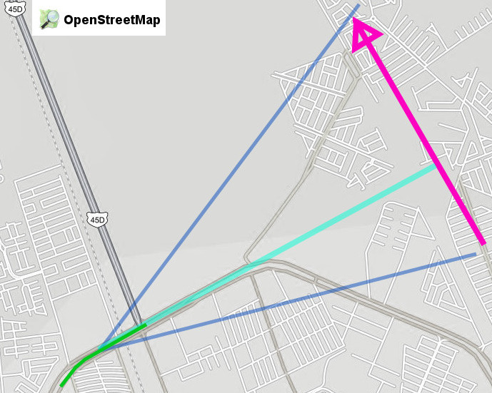
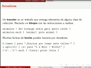
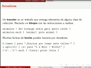
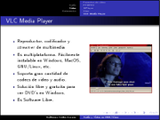
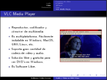

Movimiento Libre
Colección de ideas.
Página inicial
Avistamiento de un bólido
2014-01-14 15:55 - guivaloz

Les informo que mi esposa Rosa Elena y su servidor veníamos conduciendo la mañana de hoy por el Periférico (en Gómez Palacio, Durango, México) y antes de subir el paso a desnivel que está frente a Soriana Hamburgo vimos un bólido surcar el cielo.
Rosy me ha dado dos notas regionales sobre el fenómeno, además de otra por parte de Sergio:
- http://conexiontotal.mx/2014/01/14/meteorito-cae-en-saltillo/
- http://www.vanguardia.com.mx/caeovniensaltilloautoridadeslobuscan-1923456.html
- http://www.elsiglodetorreon.com.mx/noticia/952770.reportan-caida-de-meteorito-en-saltillo.html
¡Fue maravilloso! ¡El más grande y fantástico que haya visto! Lástima que iba manejando y no lo esperábamos (para tratar de tomar video), como suele ocurrir.
Oferta de trabajo
2014-01-13 09:00 - guivaloz
Escribo, en esta ocasión después de mucho tiempo, para hacer de su conocimiento una oferta de trabajo y para que me ayuden a propagar mi llamado.
Tengo una oferta de trabajo para un desarrollador; trabajará conmigo, aprenderá mucho y será estable (el trabajo) por largo tiempo (claro, si hace lo que tiene hacer). Sueldo ~7K.
Deberá aprobar los exámenes que aplicaré.
De inicio están estas primeras condiciones:
- Que tenga conocimiento de los lenguajes PHP, C++ y/o Java. Además de SQL.
- Carrera terminada. Título o cédula profesional es mejor.
- Debe comunicarse directamente a mi correo electrónico: guivaloz@movimientolibre.com. Cualquier pregunta que me haga a través de otro medio (por ejemplo teléfono) no la responderé y lo consideraré como descalificado.
- Entregar Curriculum Vitae detallando sus habilidades y experiencias en desarrollo. Como archivo PDF adjunto en un mensaje de correo electrónico (entregar cualquier otro formato descalifica también).
- Son puntos buenos compartir código que haya escrito; preferentemente usando la plataforma http://github.com.
- Este llamado se cierra el 15 de enero de 2014.
Muchas gracias.
Distribuciones GNU/Linux, entornos y programas libres
2010-10-19 23:55 - guivaloz


Para el XX Semana Académica en la Universidad Autónoma de Coahuila su servidor elaboró esta amena y visual presentación sobre las distribuciones GNU/Linux y los entornos de escritorio más populares.
Descargar
Taller de Ruby Básico
2009-11-22 23:55 - guivaloz

 

!/presentaciones/!:/presentaciones/ruby-basico-taller/diapositiva-03.png !/presentaciones/!:/presentaciones/ruby-basico-taller/diapositiva-16.png !/presentaciones/!:/presentaciones/ruby-basico-taller/diapositiva-25.png
Para el “Foro Académico Regional 2009”:http://www.sistemasitl.com/foro2009/html/ en el “Instituto Tecnológico de la Laguna”:http://www.itlalaguna.edu.mx/ su servidor impartió un Taller Básico de Ruby. Los asistentes conocieron y practicaron las bases de este relativamente nuevo lenguaje de programación que promete un gran futuro.
Descargar
Edubuntu en la educación
2009-10-28 01:00 - guivaloz


Para la 16va. Semana Nacional de Ciencia y Tecnología en un evento organizado por el COECYT de Coahuila representando a InnovaTIC y al GULAG, elaboré la presentación “Edubuntu en la educación”.
Este material es una semblanza de lo que es el Software Libre, Ubuntu y Edubuntu, haciendo énfasis en su aplicación para el ámbito educativo. Se le hace la pregunta al público de que si sabe cuánto se gasta por comprar software privativo, si sabe que se estén usando copias ilegales del mismo y si es justo que sólo se enseñe una alternativa comercial habiendo otras libres. Concluye reflexionando sobre el potencial de la Comarca Lagunera para integrarse a las Industrias de la Información y Comunicación.
Descargar
Gentoo Linux... ¡10 años compilando!
2009-10-06 22:00 - guivaloz
El 5 de octubre de 2009 se celebró el décimo aniversario de la distribución Gentoo Linux con la liberación de un LiveDVD conmemorativo. Hace diez años, el proyecto Enoch fue renombrado como Gentoo y el nombre de dominio gentoo.org fue registrado.

Revista del Consumidor - La descarga te hará libre
2009-05-09 14:00 - guivaloz
Una muy grata sorpresa es encontrar un artículo dedicado al software gratuito en una revista de circulación nacional. Es en la Revista del Consumidor de Mayo de 2009. En la portada aparece como “Software Gratis que sí te ayuda a ahorrar (y no te convierte en pirata)”.
Escrito por Sara Velázquez, habla a cerca de las desventajas de usar software pirata y que la solución, en estos tiempos de crisis, es recurrir al software gratuito. Ella menciona: “Por lo regular, lo que es gratis suena a que es malo, o que será de menor calidad, pero no siempre es así. Por ejemplo, este artículo fue escrito utilizando OpenOffice 3.0, un paquete gratuito para oficina que no le pide nada al popular Office 2007.”

KDE 4 Reinventando el entorno gráfico
2009-04-21 12:00 - guivaloz


Con motivo del Festival Latinoamericano de Instalación de Software Libre, FLISOL 2009 he elaborado esta presentación sobre el origen y la nueva versión del KDE llamándola KDE 4 - Reinventando el entorno gráfico.
Fuertes e innovadores cambios nos ofrece la versión 4 de este entorno de escritorio e infraestructura de desarrollo para sistemas Unix/Linux. Aunado a ello una gran comunidad de desarrolladores, traductores, diseñadores y promotores han incrementado sus esfuerzos para lograr crear lo mejor de lo mejor para el Software Libre.
Esta presentación está basada en los materiales de Thomas Thym y de Arturo Hoffstadt.
Una de las frases de la nueva campaña de KDE simboliza lo que les digo: “Sé libre de pedir un deseo, y entonces ayuda a que se vuelva realidad”.
Descargar
Audio y Video en GNU/Linux
2008-10-26 20:45 - guivaloz

 

Con motivo del VI Simposium Nacional de Sistemas Computacionales e Informática (SINASCI) organizado por el Instituto Tecnológico Superior de Lerdo elaboré esta sencilla presentación para mostrar las cualidades de los programas multimedia LAME, Audacity, FFMPEG, MPlayer, Xine y VLC. Todos son Software Libre.
Descargar
Consejos para una Informática Ecológica
2008-05-17 15:30 - guivaloz


Ante una nueva era donde hay más conciencia por la conservación del medio ambiente nos vemos en la necesidad de buscar mejores alternativas, más eficientes energéticamente hablando, de nuestros equipos informáticos. Las nuevas tecnologías del Kernel Linux, los fabricantes de equipos de cómputo y los usuarios debemos de hacer esfuerzos por lograr disminuir el consumo de energía en pro de nuestro mundo.